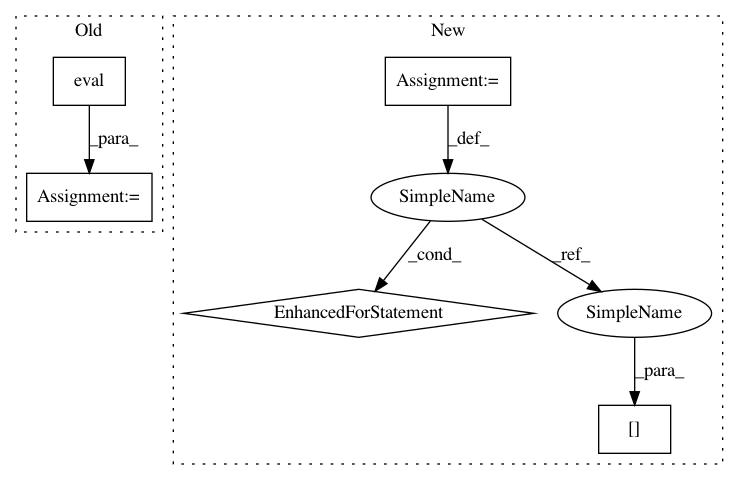

e7512f6bd434ef89296298a8bd16044917d7ce68,examples/gcn2.py,,test,#,72
Before Change
pred = model(data.x, data.adj_t).argmax(dim=-1, keepdim=True)
train_acc = evaluator.eval({
"y_true": data.y[split_idx["train"]],
"y_pred": pred[split_idx["train"]],
})["acc"]
valid_acc = evaluator.eval({
"y_true": data.y[split_idx["valid"]],
"y_pred": pred[split_idx["valid"]],
})["acc"]
After Change
def test():
model.eval()
pred, accs = model(data.x, data.adj_t).argmax(dim=-1), []
for _, mask in data("train_mask", "val_mask", "test_mask"):
accs.append(int((pred[mask] == data.y[mask]).sum()) / int(mask.sum()))
return accs
best_val_acc = test_acc = 0
In pattern: SUPERPATTERN
Frequency: 3
Non-data size: 5
Instances
Project Name: rusty1s/pytorch_geometric
Commit Name: e7512f6bd434ef89296298a8bd16044917d7ce68
Time: 2020-09-23
Author: matthias.fey@tu-dortmund.de
File Name: examples/gcn2.py
Class Name:
Method Name: test
Project Name: dpressel/mead-baseline
Commit Name: 57591a23e73d3b2ca8132589e68c8a480f1686f5
Time: 2020-04-28
Author: dpressel@gmail.com
File Name: baseline/tf/lm/model.py
Class Name: LanguageModelBase
Method Name: load
Project Name: rusty1s/pytorch_geometric
Commit Name: e7512f6bd434ef89296298a8bd16044917d7ce68
Time: 2020-09-23
Author: matthias.fey@tu-dortmund.de
File Name: examples/gcn2.py
Class Name:
Method Name: test
Project Name: idaholab/raven
Commit Name: 078b2512f26bfb20aa3ecbb6a065008bf7d45753
Time: 2020-06-30
Author: mohammad.abdo@inl.gov
File Name: framework/Optimizers/fitness/fitness.py
Class Name:
Method Name: invLinear